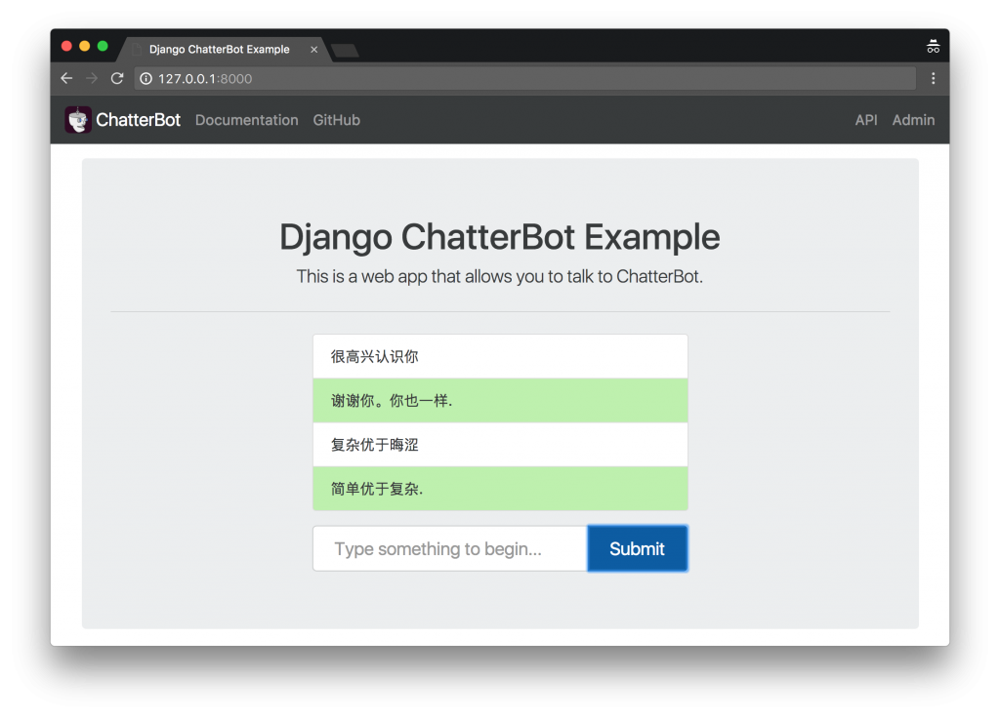
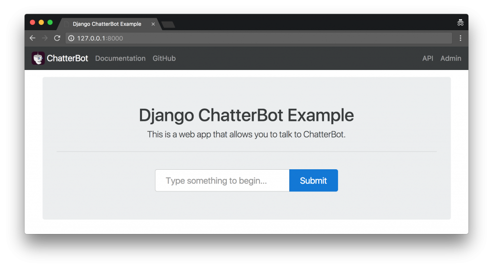

TL;DR 本文使用开源框架chatterbot从零开始构建你自己的聊天机器人（还带有WEB界面奥～）。
聊天机器人大体上分为三种：闲聊机器人、问答机器人和任务型机器人。闲聊机器人，顾名思义就是和你闲聊插科打诨的机器人，目前比较典型的代表是微软小冰，小黄鸡等。问答机器人有一个标准答案库，当用户来咨询时机器人负责理解用户的语意，给出符合语意的标准答案，目前比较典型的应用是各类咨询机器人，客服机器人等。最后一类：任务型机器人，通过和客户的沟通帮助用户完成特定任务比如定机票、定闹钟等，目前比较典型的应用是各种私人助理，苹果的siri系统也具备此类功能。
我们这里介绍一个简单易用的闲聊机器人框架chatterbot website: http://chatterbot.readthedocs.io/
先上一个成品图，这将是我们最后完成时的效果：

安装
1 | pip install chatterbot |
快速入门（toy级别的方案）
下面的代码实现了一个toy聊天机器人
1 | # 导入所需的依赖 |
上述代码会训练你给定的训练集，并把训练结果保存起来，没有指定的情况下，会使用存储模块chatterbot.storage.SQLStorageAdapter完成模型的存储。在完成训练后就可以将训练代码移除，这样机器人就不会每次都要从头训练了。
比较正式的方案
上面的方案使用的语料库是硬编码在文档中的，这在正式项目中是不合适的。下面介绍一个比较正式的使用chatter的方案。
1 | import os |
官方自带的中文聊天数据集表现比较差，你需要自己实现一个trainer，具体怎么实现见官方文档 Creating a new training class.
Web集成
chatter自带了Django集成，所以很容易架设一个网站，提供HTTP接口、管理后台以及在线聊天页面等功能。具体代码可以拷贝官方的示例代码https://github.com/gunthercox/ChatterBot/tree/master/examples/django_app, 这里需要注意的是，你需要更改chatterbot的配置在settings.py里面的CHATTERBOT变量处，具体怎么修改，请参考文档1和文档2,但你仍然需要以下步骤：
安装Django
1 | pip install django |
同步数据库
1 | python manage.py migrate |
创建超级用户
1 | python manage.py createsuperuser |
训练chatterbot
1 | python manage.py train |
运行server
1 | python manage.py runserver |
web服务器默认监听5000端口，访问http://127.0.0.0.1:5000就能访问页面了，页面效果如下图：
